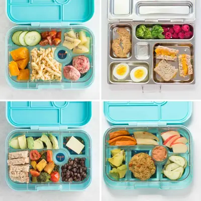

Bento Box Lunch Ideas - DIY Pasta Salad Bar

Ingredients
- 1/2 cup Pasta of choice, preferably whole grain or legume-based (e.g. chickpeas, lentils)
- 1/4 cup Protein (chicken, beef, hard-boiled egg, shrimp, beans, tofu)
- Cubed or sliced cheese
- 3 tablespoons Sauce (pesto, vinaigrette, ranch, hummus)
- cherry/grape tomatoes (quartered for 4 years and younger)
- cucumber (sliced or cubed)
- zucchini (sliced or shredded)
- carrots (sliced or shredded)
- bell peppers (sliced)
- baby spinach
- peas
- corn
Steps
- Pack all the components into separate compartments. Place the pasta in the largest compartment so that if your child decides to mix up all the components together, they can!
- If your lunch box is not leak-proof, be sure to add the sauce/dressing in a separate container.
Recipe by Min Kwon · Kidfriendly Meals, from MJ and Hungryman. Saved here for personal use; the original has the full notes, tips and photos. Open original